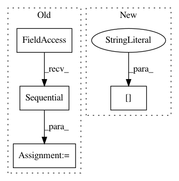

61228f3243eaee39cba31a9abd2afc6ead9612a8,implementations/cyclegan/models.py,UNetDown,__init__,#UNetDown#Any#Any#Any#Any#,10
Before Change
if dropout:
model += [nn.Dropout(dropout)]
self.model = nn.Sequential(*model)
def forward(self, x):
return self.model(x)
After Change
conv_block = [ nn.ReflectionPad2d(1),
nn.Conv2d(in_features, in_features, 3),
nn.InstanceNorm2d(in_features),
nn.ReLU(inplace=True),
nn.ReflectionPad2d(1),
nn.Conv2d(in_features, in_features, 3),
nn.InstanceNorm2d(in_features) ]
In pattern: SUPERPATTERN
Frequency: 4
Non-data size: 4
Instances
Project Name: eriklindernoren/PyTorch-GAN
Commit Name: 61228f3243eaee39cba31a9abd2afc6ead9612a8
Time: 2018-05-04
Author: eriklindernoren@gmail.com
File Name: implementations/cyclegan/models.py
Class Name: UNetDown
Method Name: __init__
Project Name: MolSSI/QCEngine
Commit Name: a5ee2e0ea284a9b024721536abb94b7998a9e8ee
Time: 2018-11-13
Author: malorian@me.com
File Name: qcengine/programs/torchani.py
Class Name:
Method Name: run_torchani
Project Name: jwyang/faster-rcnn.pytorch
Commit Name: 3437b4af816668b1a7ac7f2aa15a5470b61fd43b
Time: 2017-08-22
Author: jyang375@vicki.cc.gatech.edu
File Name: lib/model/faster_rcnn/faster_rcnn.py
Class Name: _fasterRCNN
Method Name: __init__
Project Name: dpressel/mead-baseline
Commit Name: 3bc0a1906529329f57c749f6a175eca4b7907a96
Time: 2018-05-30
Author: dpressel@gmail.com
File Name: python/baseline/pytorch/classify/model.py
Class Name: NBowBase
Method Name: _init_stacked